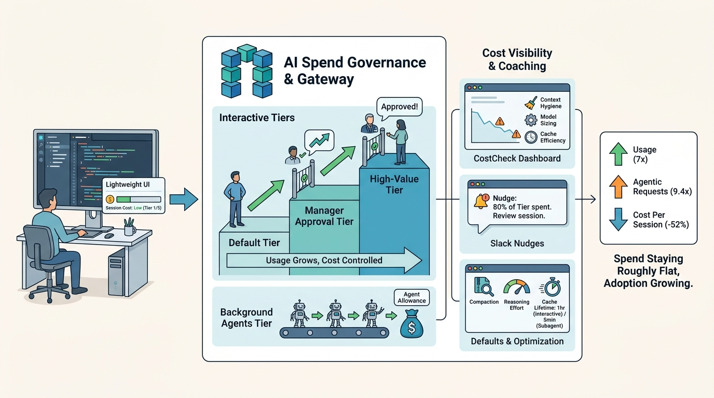

Part II — GATEWAYS: Agnostic Building Blocks
Spend Tiers, Not Spend Caps: Governing Token Costs

Image generated by Google Gemini (gemini-3-pro-image-preview)
Part II — GATEWAYS: Agnostic Building Blocks

Image generated by Google Gemini (gemini-3-pro-image-preview)